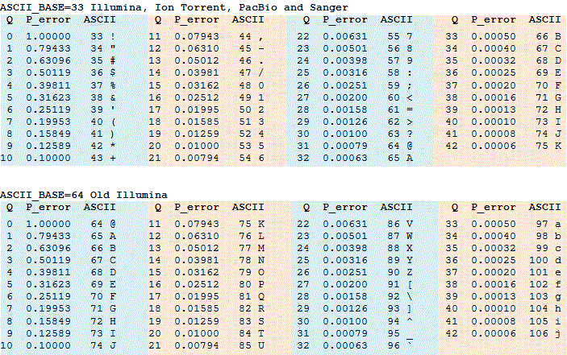
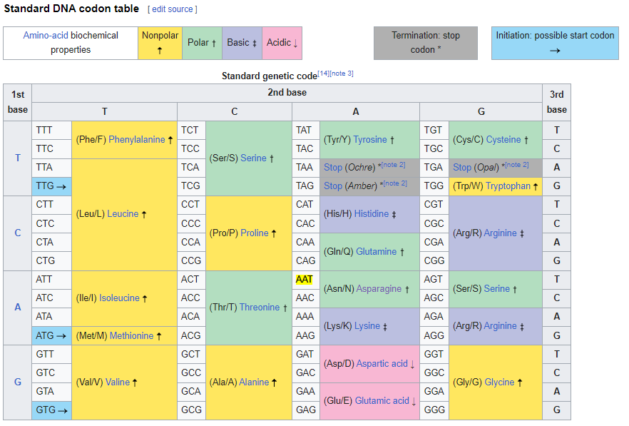
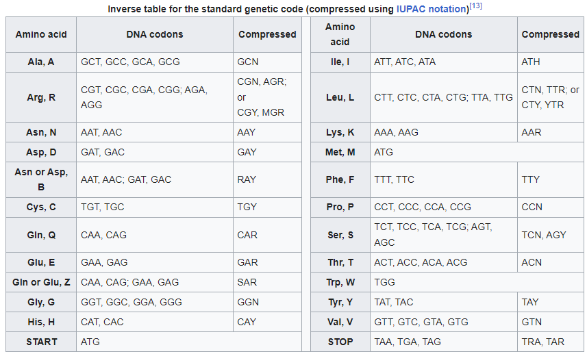

ord('!'), chr(33), ord('K'), chr(75)(33, '!', 75, 'K')FASTA is a standard format to store genetic sequences.
FASTA files count two lines for each sequence (see reference on NCBI site):
> and a unique identifier, followed by optional additional information.TATTAGGTTTTCTACCTACCCAGGAAAAGCCAACCA ...The format of the definition line varies from data source to data source.
Example:
>MCHU - Calmodulin - Human, rabbit, bovine, rat, and chicken
MADQLTEEQIAEFKEAFSLFDKDGDGTITTKELGTVMRSLGQNPTEAELQDMINEVDADGNGTIDFP ....In this project, we use read sequences from NextGen sequencing tools as well as read sequences simulated using the ART Illumina simulator tool.
NextGen sequencing tools most often store read sequences in a FASTQ format.
ART Illumina simulator tool outputs both a FASTQ file and an alignment file (ALN) providing information on the original reference sequence it was simulated from. ALN files are also referred to as Clustal Alignnent format.
A FASTQ file contains one 4-line block for each read. It includes a readID, followed by both the read sequence and a quality scores, in the following format:
@readid
sequence_read
+
base_quality_scores Example:
@2591237:ncbi:1-60400
ACAACTCCTATTCGTAGTTGAAGTTGTTGACAAATACTTTGATTGTTACG
+
CCCBCGFGBGGGGGGGBGGGGGGGGG>GGG1G=/GGGGGGGGGGGGGGGGFor each base in the read sequence, a base quality score is coded by an ASCII character. They are Q Scores or Phred+33 encoded, where the quality score is equal to ASCII code of the character minus 33.
Reference information:
Information extraction
The following metadata information can be parsed from FASTQ generated by ART Illumina:
FASTQ file element:
@2591237:ncbi:1-60400
ACAACTCCTATTCGTAGTTGAAGTTGTTGACAAATACTTTGATTGTTACG
+
CCCBCGFGBGGGGGGGBGGGGGGGGG>GGG1G=/GGGGGGGGGGGGGGGGreadid, e.g. 2591237:ncbi:1-60400.read_sequence itself, e.g. ACAACTCCTATTCGTAGTTGAAGTTGTTGACAAATACTTTGATTGTTACGbase_quality_score, the Q Score in ASCII, e.g. CCCBCGFGBGGGGGGGBGGGGGGGGG>GGG1G=/GGGGGGGGGGGGGGGGFurthermore, the following metadata can be parsed from the first line:
- `refseqid` of the original sequence used for the read, e.g. `2591237:nbci-1`
- `read_nbr` of the read, e.g. `1-60400An alignment file in ALN format has a Header and main Body parts.
The header part includes the command used to generate this file and reference sequence id and length. The header @CM tag for command line, and @SQ for reference sequence.
A Header always starts with ##ART and ends with ##Header End.
Header example, for ALN file generated by ART Illumina:
##ART_Illumina read_length 50
@CM /bin/art_illumina -i /home/vtec/projects/bio/metagentools/data/cov_data/cov_virus_sequences_ten.fa -ss HS25 -l 50 -f 100 -o /home/vtec/projects/bio/metagentools/data/cov_simreads/single_10seq_50bp/single_10seq_50bp -rs 1674660835
@SQ 2591237:ncbi:1 [MK211378] 2591237 ncbi 1 [MK211378] 2591237 Coronavirus BtRs-BetaCoV/YN2018D 30213
@SQ 11128:ncbi:2 [LC494191] 11128 ncbi 2 [LC494191] 11128 Bovine coronavirus 30942
@SQ 31631:ncbi:3 [KY967361] 31631 ncbi 3 [KY967361] 31631 Human coronavirus OC43 30661
##Header EndFor each reference sequence used to build the reads, we can parse the following metadata info:
refseqid: 2591237:ncbi:1
ref_seq_length: 30213The Body part contains each read’s alignments in the following format:
>refseqid read_id aln_start_pos ref_seq_strand
ref_seq_aligned
read_seq_aligned aln_start_pos is the alignment start position of the read in the reference sequence.ref_seq_aligned is the aligned region of reference sequence, which can be from plus strand or minus strand of the reference sequence.read_seq_aligned is the aligned sequence read, which always in the same orientation of the same read in the corresponding fastq file.aln_start_pos is always relative to the strand of reference sequence. That is, aln_start_pos 10 in the plus (+) strand is different from aln_start_pos 10 in the minus (‐) stand.
Body example:
>2591237:ncbi:1 2591237:ncbi:1-60400 14770 +
ACAACTCCTATTCGTAGTTGAAGTTGTTGACAAATACTTTGATTGTTACG
ACAACTCCTATTCGTAGTTGAAGTTGTTGACAAATACTTTGATTGTTACG refseqid: 2591237:ncbi:1
readid: 2591237:ncbi:1-20100
aln_start_pos: 23878
ref_seq_strand: -
ref_seq_aligned: ACAACTCCTATTCGTAGTTGAAGTTGTTGACAAATACTTTGATTGTTACG
read_seq_aligned: ACAACTCCTATTCGTAGTTGAAGTTGTTGACAAATACTTTGATTGTTACGReference information:
The quality score of a base, also known as a Phred or Q score, is an integer value representing the estimated probability of an error, i.e. the probability that the base is incorrectly sequenced.
If \(P\) is the error probability and \(Q\) is the quality score for a base, then:
Q scores are often represented as ASCII characters. The rule for converting an ASCII character to an integer varies.
The two tables below convert between integer Q scores, ASCII characters and error probabilities.
ASCII_BASE = 33 (table on top) is now almost universally used. In older systems, ASCII_BASE = 64 is also used.

(See reference here)
K75Python note:
Decode an ASCII character with
ord(c)and encode it withchr(i)
q_score2prob_error (char:str, ASCII_base:int=33)
Return the probability of error for a given Q score encoded as ASCII character
| Type | Default | Details | |
|---|---|---|---|
| char | str | ASCII character retrieved from Q Score or Phred value in FASTQ | |
| ASCII_base | int | 33 | ASCII base. Mostly 33, can be 64 in old FASTQ files |
Selection of high Q score ASICC code, Q score values and corresponding P error:
ASCII Q Score | Q Score | P error
--------------|---------|--------
K | 42 | 0.00006
J | 41 | 0.00008
I | 40 | 0.00010
H | 39 | 0.00013
G | 38 | 0.00016
F | 37 | 0.00020
E | 36 | 0.00025
D | 35 | 0.00032
C | 34 | 0.00040
B | 33 | 0.00050
A | 32 | 0.00063
@ | 31 | 0.00079
? | 30 | 0.00100
> | 29 | 0.00126
= | 28 | 0.00158 In the case of the following FASTQ file:
@2591237:ncbi:1-60400
ACAACTCCTATTCGTAGTTGAAGTTGTTGACAAATACTTTGATTGTTACG
+
CCCBCGFGBGGGGGGGBGGGGGGGGG>GGG1G=/GGGGGGGGGGGGGGGGThe following metadata information can be parsed:
read_id, e.g. 2591237:ncbi:1-60400. The following information can be parsed:
ref_seq_id of the original sequence used for the read, e.g. 2591237:nbci-1read_nbr of the read, e.g. `60400sequence_read itself, e.g. ACAACTCCTATTCGTAGTTGAAGTTGTTGACAAATACTTTGATTGTTACGbase_quality_score, the Q Score in ASCII, e.g. CCCBCGFGBGGGGGGGBGGGGGGGGG>GGG1G=/GGGGGGGGGGGGGGGGThis ASCII encoded Q Score can be converted into probability of error for each bp in the read:
q_scores = 'CCCBCGFGBGGGGGGGBGGGGGGGGG>GGG1G=/GGGGGGGGGGGGGGGG'
num_scores = [f"{q_score2prob_error(char):6.5f}" for char in q_scores]
print('; '.join(num_scores))
print(f"Maximum error probability: {max(num_scores)}")0.00040; 0.00040; 0.00040; 0.00050; 0.00040; 0.00016; 0.00020; 0.00016; 0.00050; 0.00016; 0.00016; 0.00016; 0.00016; 0.00016; 0.00016; 0.00016; 0.00050; 0.00016; 0.00016; 0.00016; 0.00016; 0.00016; 0.00016; 0.00016; 0.00016; 0.00016; 0.00126; 0.00016; 0.00016; 0.00016; 0.02512; 0.00016; 0.00158; 0.03981; 0.00016; 0.00016; 0.00016; 0.00016; 0.00016; 0.00016; 0.00016; 0.00016; 0.00016; 0.00016; 0.00016; 0.00016; 0.00016; 0.00016; 0.00016; 0.00016
Maximum error probability: 0.03981It shows that most bp have a very low probability of error, except a few bp with probability or 2.5% and 3.9%,
These are the basic codon tables for DNA sequences. They are used to translate DNA sequences into amino acid sequences.
Direct DNA codon table

Inverse DNA codon table

(Source)
StandardDNACodon ()
*Hold standard DNA codon reference information
{'amino acid name': 'Phenylalanine',
'amino acid letter': 'F',
'codons': ['TTT', 'TTC']}{'amino acid symbol': 'Phe',
'amino acid name': 'Phenylalanine',
'amino acid letter': 'F'}